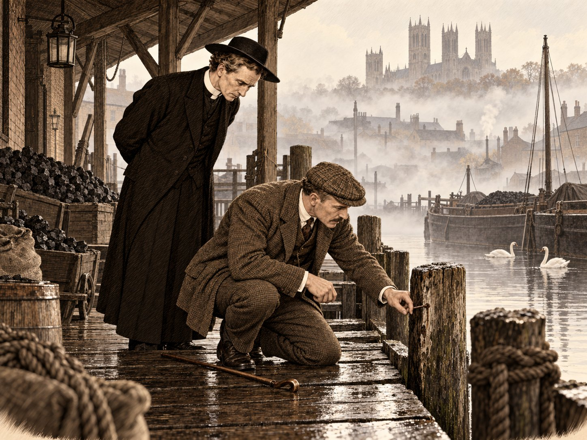

Цистерна

Скажу сразу: я не сыщик и никогда им не был. Если человеку, который полжизни проторчал в вельде, однажды довелось побегать по шотландским пустошам от шайки немецких шпионов, это ещё не делает из него Шерлока Холмса. В военном министерстве, как я убедился, думают иначе, но у военного министерства вообще своеобразные понятия о том, кто к чему пригоден.
В начале ноября пятнадцатого года я сидел в Ферлинге, большом загородном доме в Хэмпшире, куда меня отправили долечивать ногу после Лоса, и маялся от безделья так, как не маялся даже весной четырнадцатого года в Лондоне. Нога заживала исправно. Врачи выковыряли из неё всё, чем её нашпиговали немецкие артиллеристы, и обещали, что через месяц я буду ходить не хуже прежнего; я им верил, но месяц — долгий срок для человека, чей батальон остался во Франции без него. Мои Леннокские горцы держали теперь кусок траншеи где-то под Холмом 70, а я ел за завтраком по три яйца, читал газеты от первой строки до последней и спорил с Сэнди Арбатнотом, который валялся в Ферлинге с тем же диагнозом, о том, что важнее — Салоники или Месопотамия. Сэнди знал Восток, как я знаю Матабелеленд, и всякий раз меня обставлял, а я всякий раз заводил разговор снова: больше заняться было нечем.
В пятницу, пятого ноября, за завтраком мне принесли телеграмму. Она была короткая, как все армейские телеграммы, и требовала, чтобы майор Ханней явился в военное министерство к трём часам дня. Подпись мне ничего не говорила.
— Батальон, — сказал Сэнди, не поднимая головы от тарелки. — Или красные петлицы. В любом случае тебе конец, Дик.
Я сказал, что ему самому конец, и поехал в Лондон десятичасовым поездом.
Полковник, который меня вызвал, сидел в комнатке под самой крышей, куда вела лестница, рассчитанная, по-видимому, на горных коз. Это был сухой седой человек с лицом аукциониста, из тех, кто сначала прикидывает, сколько ты стоишь, а потом уже здоровается. Прикидывал он недолго.
— Я читал ваш отчёт о деле Чёрного камня, — сказал он. — Его читали очень немногие, так что не обольщайтесь: ваша слава не выходит за пределы трёх кабинетов. Вы горный инженер?
Я сказал, что был им, пока не стал солдатом.
— Паровые тягачи видели? Тракторы на гусеничном ходу?
— Видел, — сказал я. — В Родезии ими таскали руду, пока они не увязали в первой же луже.
Он кивнул, как будто именно это и хотел услышать, и положил передо мной бумагу. Бумага была из тех, что подписывают, не читая, потому что всё равно подпишешь: я обязывался никогда и никому не рассказывать о том, что увижу. Я подписал.
— В Линкольне есть завод, — сказал полковник. — До войны он делал молотилки и паровые машины для фермеров. Сейчас он делает одну вещь, о которой я вам не скажу ни слова: вам её покажут на месте, и, как инженер, вы поймёте сами. Сегодня утром из реки в Линкольне вытащили чертёжника этого завода. Голова у него проломлена, а кожаной сумки, с которой он не расставался, при нём нет. Полиция думает, что это пьяная драка. Адмиралтейство думает, что это немцы. Я хочу, чтобы туда поехал человек, который знает немцев не по газетам.
— А если это всё-таки драка?
— Тогда вы вернётесь в Хэмпшир и будете есть яйца, — сказал он. Выходит, он знал и про яйца. — Поезд с Кингс-Кросса в пять. Остановитесь в «Белом олене», это у собора. Утром к вам придут.
Дорога до Линкольна заняла весь вечер. В Грантеме была пересадка, и я полчаса ходил взад-вперёд по тёмной платформе: фонари там по новым правилам притушили на случай цеппелинов. Англия, которую я помнил по прошлой весне, сияла по вечерам, как ярмарка; теперь она сидела в потёмках, как бур на привале, когда рядом бродят чужие. Мне это даже нравилось. В темноте человек честнее: он не делает вид, что ничего не боится.
У линкольнского вокзала меня окликнули. Трое мальчишек тащили на тачке чучело в старом котелке и с бумажной маской вместо лица, и самый маленький протянул мне шапку:
— Пенни для Гая, сэр!
Я дал ему шиллинг и спросил, где они будут его жечь. Мальчишка посмотрел на меня как на сумасшедшего.
— Костры нынче нельзя, сэр. Немцы увидят. Мы его просто так возим.
Они покатили своего Гая дальше, в темноту, и я подумал, что это довольно точная картина нашего положения. Три века назад в этот день поймали человека, который сидел в подвале под парламентом с бочонками пороха, и с тех пор вся Англия раз в год празднует, что заговор раскрыт. Теперь по улицам возили заговорщика, которого нельзя сжечь, а я ехал искать другого, о котором не знал ровно ничего, кроме того, что он, по всей вероятности, говорит по-немецки.
До «Белого оленя» пришлось карабкаться в гору по улице, которая так и называется — Крутой холм, и называется честно. Нога моя высказала о ней всё, что думала. Наверху, над крышами, стоял собор; луны не было, и я его не столько видел, сколько чувствовал, как в буше чувствуешь у себя за спиной скалу. Гостиница оказалась старым домом с низкими потолками и большим камином. Я выпил виски с содовой, лёг и уснул так, как не спал с самого госпиталя.
Утром ко мне пришли двое.
Первому было лет сорок; это был плотный, быстрый человек с живым лицом и руками механика, которые никак не вязались с его отличным костюмом. Он говорил много и весело, перескакивал с одного на другое и, кажется, ни на минуту не переставал думать о чём-то своём, железном. Второй был немногим старше, в синей форме морского лейтенанта, и почти всё время молчал; у него было лицо человека, который привык сперва посчитать, а потом уже открыть рот. Первый оказался управляющим директором завода, Уильямом Триттоном, второй — лейтенантом Уилсоном из морской авиации, которого Адмиралтейство приставило к заводу присматривать за работой. Как я скоро понял, присматривали они друг за другом на равных и были этим очень довольны.
— Вот за этим столом, — сказал Триттон, похлопав по дубовой столешнице в углу общего зала, — мы в сентябре нарисовали самую важную вещь в этой войне. Хозяин до сих пор не знает, какую честь ему оказали.
Уилсон слегка поморщился, и Триттон рассмеялся.
— Лейтенант считает, что я болтаю. Я и болтаю. Но майор подписал бумагу, а Гривза больше нет, и мне от этого так тошно, что лучше уж болтать.
Они отвезли меня на завод. Он стоял внизу, за рекой, в Нью-Боултеме, среди закопчённых улиц, которые все были похожи одна на другую, как кирпичи. На воротах висела вывеска «Уильям Фостер и Кº. Веллингтонский литейный завод», за воротами гремело, шипело и пахло горячим металлом, и над всем этим, далеко наверху, на холме, стоял собор — теперь я увидел его как следует. Он был огромный и серый и смотрел на завод так, как, наверное, смотрел бы на муравейник.
Во дворе, в углу, огороженном досками, стоял брезентовый горб величиной с хороший фургон. На брезенте крупными буквами было написано название фирмы. Уилсон молча отвязал угол и откинул полотнище.
Я не стану описывать, что я увидел, потому что подписал бумагу, а бумаги я соблюдаю. Скажу только, что это был железный ящик на гусеницах — грубый, клёпаный, неказистый, как первый паровоз, который нарисовал бы ребёнок. А потом я подумал о проволоке. Под Лосом немцы натянули перед своими окопами столько проволоки, что её не взяла наша артиллерия, и мои горцы висели на ней, как бельё на верёвке. Я смотрел на эту неуклюжую штуку и видел, как она переваливается через бруствер, давит проволоку брюхом и идёт дальше, а пули отскакивают от неё, как горох от чайника. У меня перехватило горло, и мне не стыдно в этом признаться.
— Она пока не умеет того, что нужно, — сказал Уилсон. Это была самая длинная фраза, которую я от него услышал за утро. — Гусеницы не держат. Ров шириной в четыре с половиной фута её останавливает. Но это первая. Пойдёмте в цех.
В цеху, за перегородкой, лежал корпус второй машины. Он был ещё голый, как остов корабля на стапеле, и такой странной формы, что я сперва не понял, где у него нос, а где корма. В нарядах, которые висели на гвозде у входа, он значился как «водовоз для Месопотамии».
— Рабочим мы говорим, что это цистерны, — сказал Триттон. — Для воды, в пустыню. Они кивают и делают вид, что верят. Англичане — удивительный народ, майор: если им сказать, что так надо для войны, они поверят во что угодно, лишь бы не задавать вопросов.
Я спросил про Гривза.
Леонард Гривз был чертёжником. Он служил на заводе больше двадцати лет, пришёл учеником, и с лета чертил то, что лежало сейчас передо мной, — колёса, катки, звенья гусениц, сотни деталей, каждую в трёх проекциях. Триттон сказал, что рука у него была как у часовщика, а голова как у бухгалтера. Был женат, жил с семьёй в двух кварталах от завода, сын у него учился в здешней школе. Не пил, во всяком случае, не больше, чем все. В четверг он ушёл с работы в шесть, как обычно. В пятницу утром лодочник нашёл его под Хай-Бриджем.
— А чертежи? — спросил я.
— Ни один не пропал, — сказал Уилсон. — Главный чертёжник, мистер Ригби, проверил вчера всё до последнего листа. Из бюро ничего не выносят. Это правило соблюдается.
— Тогда что было в сумке?
Они переглянулись, и стало ясно, что этого они не знают.
Инспектор Даунинг из городской полиции знал не больше. Это был грузный, вежливый, очень уставший человек; людей у него не хватало, а доносов о немецких шпионах было хоть отбавляй, и я видел, что он с первой минуты причислил меня к этим доносам. Он рассказал, что Хай-Бридж — старый мост в самом центре города, на котором до сих пор стоят жилые дома, а под мостом река уходит в тёмный каменный проход, и туда течением сносит всё, что падает в воду выше. Тело пробыло в воде несколько часов. Удар пришёлся сзади, по затылку, чем-то тяжёлым. Кошелёк с девятью шиллингами остался в кармане, а часов при нём не было.
— Часы и сумка, — сказал инспектор. — Ограбление, сэр. Или ссора по пьяному делу на набережной. Там по ночам бывает всякое.
— Грабитель, который берёт сумку и часы и оставляет кошелёк, — сказал я, — очень странный грабитель.
Инспектор посмотрел на меня так, как смотрит пожилой фермер на городского, который учит его доить корову, и ничего не ответил.
Выйдя из участка, я был совершенно уверен, что знаю, в чём дело. Я знал немцев. Я видел, как работают люди Чёрного камня: аккуратно, терпеливо, без лишнего шума. Они не тронули бы кошелька, потому что кошелёк им был не нужен; они взяли бы то, ради чего пришли, и ушли бы, оставив полиции пьяную драку на набережной. Чертёжник, который двадцать лет носил одну и ту же сумку, мог однажды положить в неё не то, что следовало. А кто-то мог об этом знать. Я шёл по улице и прикидывал, у кого в этом городе я бы на их месте снял комнату, и чувствовал себя превосходно, как всегда, когда наконец берёшь след.
Дом Гривзов стоял в длинном ряду одинаковых кирпичных домов неподалёку от завода. Шторы во всех окнах были опущены, как здесь делают, когда в доме покойник. Я постучал. Мне открыл священник — высокий, худой, с длинным бритым лицом и волнистыми каштановыми волосами, в которых пробивалась седина. Ему было около пятидесяти, и в тесной прихожей он казался ещё выше, чем был, будто колокольня, которую по ошибке поставили в чулан.
Я назвался и сказал, что пришёл по поручению. Он не спросил, по чьему.
— Миссис Гривз прилегла, — сказал он. — Она не спала две ночи. Если вы подождёте на кухне, я её позову, а пока могу предложить вам чаю. Чайник, правда, не мой, но я с ним уже договорился.
На кухне у стола сидел мальчик лет одиннадцати, очень прямо, сложив руки на коленях, как сидят дети, которым сказали вести себя тихо и которые боятся, что если пошевелятся, то заплачут. Перед ним лежал лист бумаги с рисунком. Это был какой-то бак на колёсах, нарисованный старательно, по линейке.
— Это Билли, — сказал священник. — Билли, это майор Ханней.
Мальчик встал и сказал «здравствуйте, сэр», а потом показал на рисунок.
— Это папа мне нарисовал. Он чертил цистерны. Для Месопотамии, для солдат, чтобы им в пустыне было что пить.
Я смотрел на этот бак на колёсах, нарисованный рукой часовщика для одиннадцатилетнего сына, и молчал. Я подписал бумагу. А священник положил мальчику руку на плечо и сказал совершенно серьёзно, без всякой улыбки:
— Это очень хорошее дело, Билли. Давать воду жаждущим. Лучше, пожалуй, не бывает.
⁂
Преподобный Эмброуз Морс, викарий прихода Сент-Гатлак, приехал в Линкольн в субботу первым поездом, и приехал он потому, что в пятницу вечером к нему в дом пришла старая миссис Брэй с телеграммой в руке. Она не плакала; она держала телеграмму так, как держат горячую сковородку, и спрашивала, правда ли, что так бывает. Двенадцать лет назад викарий венчал её дочь Энни с молодым чертёжником из Линкольна; он помнил, как жених уронил кольцо и как оно покатилось под скамью старосты, и как вся церковь, затаив дыхание, следила за ним, словно за последней монетой нищего. Теперь жених лежал в линкольнском морге, а кольцо, надо думать, было у него на пальце.
Агнес собрала ему саквояж молча и быстро, как собирают тех, кто едет туда, где плохо. В саквояж она положила чистый воротничок, Новый Завет, две пары носков и последнее письмо от Томми, которое пришло из Франции в начале октября и которое викарий перечитывал так часто, что оно протёрлось на сгибах. Томми писал, что жив, что был дождь и что больше он ничего не помнит. Викарий понимал, что это неправда, и был за эту неправду благодарен, как благодарны бываем мы тому, кто закрывает нам глаза рукой в страшном месте спектакля. На воскресную службу в Сент-Гатлак согласился приехать молодой священник из Дипингов, и Ферокс, огромный мастиф цвета мокрого песка, проводил хозяина до калитки с тем осуждением, с каким смотрит собака на всякий саквояж.
Про майора Ханнея викарий понял две вещи в первые же пять минут. Во-первых, что тот хромает и притворяется, что не хромает, — так притворяются только очень сильные люди и очень маленькие дети. Во-вторых, что майор знает о цистернах для Месопотамии что-то такое, чего не знает Билли, и что ему от этого знания неловко, как бывает неловко взрослому, который видит, что ребёнок верит в Деда Мороза, а у него самого в кармане борода. Викарий не стал спрашивать. Он вообще считал, что о чужих тайнах лучше не спрашивать, а слушать; тайна, о которой спросили, всегда лжёт, а тайна, которую оставили в покое, рано или поздно проговаривается сама.
Энни Гривз спустилась к ним через четверть часа. Это была небольшая женщина под сорок, с тем бледным, прямым, сухим лицом, какое бывает у фенских жён, привыкших к тому, что вода всё равно когда-нибудь придёт, — а Фены, осушенная болотная равнина к востоку от Стамфорда, приучают к этому лучше всякой проповеди. Она не плакала и говорила ровно, только всё время разглаживала на коленях передник, будто на нём была складка, которую непременно надо убрать до прихода гостей.
Майор спрашивал коротко и прямо, как спрашивают солдаты, и викарий подумал, что для этой женщины это, пожалуй, лучше всякой деликатности: она отвечала, как отвечают на перекличке. Да, Лен ушёл с завода в шесть. Да, он приходил домой, ужинал и ушёл снова: по четвергам он всегда уходил, у него был клуб. Нет, она не знает, когда он вернулся, потому что он не вернулся. Сумка? Сумка была всегда при нём, кожаная, отцовская ещё; в ней он носил готовальню, бутерброды и маленькую книжечку в чёрной обложке, которую никогда ей не показывал.
— Какую книжечку? — спросил майор, и голос у него стал такой, каким, наверное, говорят в засаде.
— Не знаю, сэр. Он в ней рисовал. Он всегда рисовал, ещё мальчишкой. Говорил, что у чертёжника руки должны работать даже тогда, когда он отдыхает.
Майор переглянулся с викарием, и викарий увидел в его глазах тот блеск, с каким охотник замечает на песке свежий след. Сам викарий в эту минуту думал не о книжечке, а о руках. Он вспомнил руки жениха двенадцать лет назад: длинные, чистые, очень спокойные, которые всё-таки уронили кольцо.
В последнее время, сказала Энни, Лен стал скрытный. Это из-за работы, им запретили рассказывать, и он ничего и не рассказывал, только приходил поздно и спал плохо. И ещё он стал... она поискала слово... задумчивый. Сидел над своими бумагами по вечерам и считал что-то, шевеля губами.
Майор ушёл около пяти, коротко поклонившись, как кланяются люди, которым некогда; у двери он сказал викарию вполголоса, что остановился в «Белом олене» и будет рад его видеть. Викарий остался. Он приготовил ужин, который никто не стал есть, кроме Билли, и помог Билли вымыть посуду, и в половине восьмого, когда стемнело и по улице прокатилась тележка с последним неоплаканным Гаем Фоксом, в дверь снова постучали.
Вошедший был высокий, широкоплечий, хорошо одетый человек за сорок, с аккуратными тёмными усами и лицом, которое было бы красивым, если бы не было таким усталым. Он долго снимал и вешал в тесной прихожей пальто, никак не находя крючка среди чужих пальто, и викарий узнал его раньше, чем тот назвался, — не по лицу, а по голосу, которым тот сказал в темноте прихожей: «Энни, я пришёл». Это был низкий, мягкий бас, из тех, что в церковном хоре держат на себе весь аккорд, как фундамент держит дом. Двенадцать лет назад этот бас стоял у алтаря Сент-Гатлака справа от жениха.
— Джордж Ранделл, — сказал викарий. — Вы были шафером.
— А вы нас венчали, — сказал Ранделл и крепко пожал ему руку. — Я помню. Лен уронил кольцо.
Викарий помнил и другое: подпись свидетеля в книге браков. Обычно свидетели расписываются так, будто книга их укусит, — коряво, наспех, с кляксой. Джордж Ранделл расписался ровно, твёрдо, буква к букве, как на чертеже, и викарий тогда ещё подумал, что первый раз в жизни видит человека, который пишет своё имя так, как будто его потом будут проверять.
Ранделл посидел с ними около часа. Он был добр с Энни, нежен с Билли и почтителен с викарием, и всё это было совершенно искренне, — викарий был в этом почти уверен. Он рассказывал, как они с Леном пришли на завод мальчишками, как вместе получили первые рейсшины, как Лен всегда был лучше его, «на голову лучше, преподобный, я это всегда знал и не стыжусь». Он сказал, что завтра поговорит с членами клуба — клуб, может быть, поможет Энни с похоронами. И уже уходя, надевая пальто, он сказал очень тихо, так, чтобы Энни на кухне не услышала:
— Лен в последнее время был сам не свой, преподобный. Скрытный стал. Я не знаю, что у него было на душе. Может, и лучше нам не знать.
Викарий поблагодарил его и закрыл за ним дверь. Он не знал, почему эта последняя фраза так ему не понравилась. В ней не было ничего, кроме дружеской заботы; но было в ней что-то от тех фраз, которые говорят в начале дурной пьесы, чтобы зритель потом вспомнил: «А ведь его предупреждали».
⁂
В воскресенье утром викарий отстоял раннюю службу в соборе — он давно не видел его изнутри и теперь шёл по огромному нефу, как муравей по органу, — а когда вернулся в Нью-Боултем, то застал Энни на кухне с листком бумаги в руках. Лицо у неё было такое, какое бывает у человека, который вдруг понял, что пол под ним не каменный, а дощатый и что доски гнилые.
Она чистила воскресный сюртук Лена, чтобы похоронить его в нём, и нашла в кармане две вещи. Первая была квитанция ростовщика Пикеринга с Хай-стрит: серебряные часы с цепочкой заложены за пять фунтов. Часы были отцовские; Лен носил их двадцать лет и ни разу не опоздал на завод. Вторая вещь была записка без конверта, на хорошей почтовой бумаге, написанная очень ровным, очень правильным почерком:
«Не приходи больше по четвергам. Он догадывается. Я тебя не забуду. К.»
К полудню пришёл инспектор Даунинг, которого Энни позвала через Билли, а к часу — майор Ханней, которого никто не звал, но который, по-видимому, привык приходить туда, где что-то происходит, как ветер приходит туда, где открыто окно. Инспектор прочёл записку, поглядел на квитанцию и вздохнул с облегчением человека, у которого в руках наконец оказалось что-то знакомое. Всё ясно, сказал он: долги, женщина, по четвергам он ходил к ней, а муж или ещё кто подстерёг его у реки. Дело грустное, но обыкновенное, такие дела в Линкольне случаются и без войны. Женщину на «К» найдём.
Майор сказал, что записка — пустяк. Если у человека была любовница, это ещё не значит, что его убила она; а сумка-то пропала. Немцам, сказал майор, всё равно, кого любил чертёжник, — им нужно было то, что лежало в сумке.
Викарий держал записку в руках и молчал так долго, что оба на него посмотрели.
— Вам, кажется, обоим не нравится эта бумажка, — сказал он наконец. — Инспектору она нравится слишком, а майору не нравится вовсе. А мне она не нравится по третьей причине. Она фальшивая.
— Почерк? — спросил инспектор.
— И почерк тоже. Видите, как ровно? Женщина, которая пишет любовнику, что муж догадывается, пишет второпях, за дверью, на коленке. А эту записку выводили, как прописи. Но дело даже не в почерке. Послушайте её. «Я тебя не забуду». Так не пишут, когда прощаются. Так пишут в романах, когда хотят, чтобы читатель понял, что прощаются. Это написал человек, который не знает, как пишет влюблённая женщина, но очень хорошо знает, как, по его мнению, она должна писать. Это не голос. Это граммофон.
Инспектор посмотрел на него с той вежливой жалостью, с какой полицейские смотрят на священников, а священники — на полицейских, и сказал, что записку забирает. Майор ничего не сказал, но викарий заметил, что тот посмотрел на записку второй раз — уже не так, как смотрят на пустяк.
⁂
Вечером викарий пошёл в «Якорь». Он пошёл туда потому, что Энни сказала: клуб собирается в «Якоре», и потому, что ему хотелось пива, — и он не видел причин, по которым одно должно мешать другому. Он всегда считал, что пиво — напиток очень христианский: его нельзя пить в одиночку, не почувствовав себя немного виноватым, и нельзя пить в компании, не почувствовав себя немного добрее.
«Якорь» стоял на самой пристани Брейфорда, там, где река Уитем разливается в широкую тихую заводь, на которой ночуют баржи и лебеди. Это был старый низкий трактир с чёрными балками и медными кружками над стойкой, полный табачного дыма, лодочников и того особого, тёплого, кислого запаха, который у всех английских трактиров один и тот же и по которому англичанин, наверное, узнаёт родину даже в раю. Хозяин, Бен Ходжсон, был толстый, лысый и печальный, как все хорошие трактирщики.
Викарий спросил пинту горького, похвалил его, получил вторую и только тогда спросил о Леонарде Гривзе. Ходжсон вытер стойку, хотя она была сухой.
— Хороший был человек, сэр. Казначей нашего клуба, рождественского. Ребята с завода каждый четверг кладут по шесть пенсов, по шиллингу, кто сколько может, а под Рождество получают всё разом — на гуся, на подарки ребятишкам. Лен вёл книгу и держал жестянку. Пятнадцать лет вёл. Ни разу ни на фартинг не ошибся.
— А в последний четверг он был здесь?
— Был. Сидел вон там, у окна, считал. А вот что странно, сэр, — хозяин понизил голос, — он в этот раз не из жестянки брал, а в жестянку клал. Своими. Бумажками, новыми казначейскими. Я видел, потому что он попросил меня разменять фунт. Я ещё пошутил: что, мол, Лен, клуб тебе должен? А он не засмеялся.
— А домой он ушёл с кем-нибудь?
— Один, последним, — сказал Ходжсон. — Казначей всегда уходит последним. Мистер Ранделл, секретарь, ушёл раньше: у него невеста, мисс Уэйкфилд, дочка галантерейщика с Хай-стрит. Девушка видная. Он теперь всегда раньше уходит.
Викарий допил пиво. Он думал о человеке, который, будучи в долгах, закладывает отцовские часы, а потом идёт в трактир и кладёт деньги в чужую жестянку. Это было похоже на долги так же мало, как Месопотамия похожа на Линкольн. Но он не успел додумать, потому что дверь отворилась и в трактир вошёл майор Ханней, отряхивая шляпу, и сел рядом с ним с видом человека, который давно хотел посидеть с кем-нибудь, кто не будет ни о чём спрашивать.
Они выпили. Майор пил виски, викарий — третью пинту. Говорили сначала о погоде, потом о соборе, потом о Южной Африке, где майор, оказывается, прожил тридцать лет и где, по его словам, небо было такое большое, что в нём можно было заблудиться. И только потом, когда в трактире стало тише, викарий спросил:
— Вы ведь были при Лосе, майор?
— Был. Двадцать пятого.
— Мой сын тоже был там. В восьмом Линкольнширском. Он пишет, что ничего не помнит, кроме дождя.
Майор помолчал. Потом он сказал медленно, глядя в стакан, что восьмой Линкольнширский подошёл на второй день, двадцать шестого, к Холму 70; что их бросили в бой с марша, после ночи под дождём, без еды, против пулемётов в лесу; и что он видел потом, как они выходили, и что это были люди, которых не стыдно назвать англичанами.
— Если ваш сын пишет, что помнит только дождь, преподобный, — сказал майор, — значит, он хороший солдат. Хорошие солдаты всегда пишут домой про погоду.
Викарий поблагодарил его, и они долго сидели молча, и это молчание было лучше многих разговоров, какие викарию доводилось слышать в жизни.
⁂
В понедельник я встал затемно и пошёл к реке. Это был единственный метод, в котором я хоть что-нибудь смыслил. В вельде, если ты нашёл убитую антилопу, ты не сидишь над ней и не гадаешь, кто её убил: ты обходишь её кругом, всё шире и шире, пока земля сама не расскажет тебе, откуда пришёл лев и куда он ушёл. Я подумал, что английская река в этом смысле мало чем отличается от африканской земли, разве что мокрее.
Туман лежал на воде такой плотный, что Хай-Бридж выплыл на меня из него внезапно, как корабль. Под мостом река уходила в низкую каменную арку, чёрную и гулкую, и вода шла туда быстро и молча, как идут люди на похоронах. Лодочник, который нашёл Гривза, оказался тут же: он сидел на корме своей баржи и курил трубку, такую же старую, как он сам. Я дал ему табаку, и он рассказал мне про реку больше, чем рассказал бы любой инспектор. В четверг, сказал он, лило весь день, вода поднялась; всё, что падает в реку у Брейфорда, к утру приносит сюда, под мост, и застревает у решётки. С моста человека не скинешь — там дома, окна, кто-нибудь да увидит. А на Брейфорде ночью темно, хоть глаз выколи, и пристаней там столько, что сам чёрт не сосчитает.
Я пошёл вверх по течению, к Брейфорду. Это широкая тихая заводь в самом сердце города, вся уставленная баржами, складами и угольными пристанями; над ней кричали чайки и плавали лебеди, которым, по-видимому, было совершенно всё равно, что идёт война. Трактир «Якорь» стоял на самом берегу, а за ним, в проходе между стеной трактира и угольным складом, тянулась к воде деревянная пристань под навесом. Я обошёл её на четвереньках, как обходил когда-то водопой в поисках львиных следов, и ни капли этого не стыжусь, хотя какой-то мальчишка-посыльный смотрел на меня с откровенным восторгом.
Дождь не доставал под навес, и доски там остались такими, какими их оставили в четверг ночью. На самом краю, у сваи, я нашёл свежий скол, будто по доске проехались чем-то тяжёлым — каблуком, а может, и телом. Рядом темнело пятно, которое мне очень не понравилось. А на ржавом гвозде, торчавшем из сваи на уровне колена, висел обрывок кожаного ремня в полдюйма шириной, старого, потёртого, с медной заклёпкой на конце. Я снял его осторожно, как снимают с колючки клочок шерсти, и положил в бумажник.
Картина выходила ясная. Гривз вышел из «Якоря» последним, свернул в проход к пристани — может быть, его окликнули, а может, он сам пошёл кому-то навстречу; его ударили сзади, он упал на край, сумку дёрнули, ремень зацепился за гвоздь и лопнул, а тело столкнули в воду, и река сделала остальное. Я сидел на корточках над этим гвоздём и думал, что человек, который всё это проделал, был терпелив, хладнокровен и знал, что Гривз выйдет последним. Иными словами, это был именно тот человек, которого я искал, — немецкий агент, который неделями следил за чертёжником, прежде чем ударить. Я чувствовал себя прекрасно. Мне казалось, что я уже слышу, как трещат кусты у него под ногами.
В одиннадцать меня вызвали на завод, и там всё это рассыпалось, как плохо сложенная поленница.
Триттон ждал меня в своём кабинете, и лицо у него было такое, будто ему подали к завтраку его же собственную голову. Уилсон стоял у окна. На столе лежала развёрнутая посылка: обёрточная бумага, бечёвка, клеёнка, слой вощёной бумаги, а в нём — маленькая книжечка в чёрной обложке.
— Пришла с первой почтой, — сказал Триттон. — Отправлена в субботу, здесь, в Линкольне. Адресована управляющему, лично. Ни записки, ни слова.
Я раскрыл книжечку. Я не стану рассказывать, что в ней было, по той же причине, по какой не рассказывал про брезент во дворе. Скажу только, что Леонард Гривз, отдыхая после работы, рисовал то же, над чем работал, — бегло, свободно, с той любовью, с какой человек рисует то, что ему снится. Там было всё. Не одна деталь, не один лист, а вся вещь целиком, какой она будет, когда её достроят.
— Ни один чертёж в бюро не стоит этой книжки, — сказал Уилсон тихо. — Там каждая деталь отдельно. А здесь всё вместе. Любой толковый инженер в Эссене построил бы по ней такую же за три месяца.
И вот её прислали обратно. Бережно завернув в клеёнку от сырости и в вощёную бумагу от клеёнки, перевязав бечёвкой крест-накрест, как перевязывают подарок.
Я сел, потому что нога вдруг сказала мне, что пора сесть, и долго смотрел на эту бечёвку. Мне было очень неприятно, и я не стану делать вид, что это было не так. Я знал немцев. Я знал людей Чёрного камня. Ни один из них, ни один немец на всём свете, получив в руки такую вещь, не отправил бы её обратно — он скорее проглотил бы её, если бы за ним гнались. Грабитель бросил бы её в реку вместе с сумкой. Сумасшедший сжёг бы. А этот завернул её в клеёнку, чтобы не промокла, и отослал туда, где ей место. Так поступает только человек, который сделал что-то страшное и которому невыносима мысль, что от этого пострадает ещё и Англия. Я тридцать лет ходил по следам и знал, как выглядит след, когда зверь вдруг поворачивает назад. Это был именно такой след. Мой немец, которого я так ясно видел у гвоздя на пристани, растаял, как туман над Брейфордом, и на его месте стоял кто-то другой — англичанин, и притом такой, что, пожалуй, скорее пойдёт на виселицу, чем поможет бошу.
— Посмотрите на адрес, — сказал вдруг Уилсон.
Адрес был написан печатными буквами, ровными, как солдаты на параде, с одинаковыми просветами между ними, — так, как пишут надписи на чертежах.
— Чертёжный шрифт, — сказал Триттон медленно. — Так у нас подписывают листы. Мистер Ригби гоняет за это учеников, как сержант новобранцев. Ни один человек со стороны так писать не станет. Ему и в голову не придёт.
У меня в голове что-то щёлкнуло, как затвор. Я вспомнил высокого священника на кухне у Гривзов, который держал в руках записку от таинственной «К.» и говорил, что её выводили, как прописи.
Даунинг отдал мне записку без особой охоты, но отдал, потому что Триттон позвонил кому-то по телефону, и этот кто-то позвонил Даунингу. Вечером я положил её рядом с адресом на столе в «Белом олене» и позвал викария. Он пришёл, сел, надел очки и долго молчал, водя по бумаге длинным пальцем, как водят пальцем по нотам.
Записка была написана не печатными буквами, а наклонным почерком, вроде бы женским. Но заглавные буквы в ней и буквы на посылке были сделаны одной рукой. Я это видел, и викарий это видел: тот же наклон, те же ровные просветы, та же привычка ставить точку маленьким аккуратным кружком, как ставят её на чертеже рядом с размером. Человек, который писал записку, очень старался писать как женщина, но рука у него была выучена в другом месте, и рука его выдала, как акцент выдаёт шпиона на третьем слове.
— Значит, кто-то из бюро, — сказал я. — Их там четырнадцать человек.
— Значит, кто-то из бюро, — сказал викарий.
Он сказал это так, что я посмотрел на него внимательнее. Но он смотрел не на меня, а куда-то сквозь стену, туда, где за окном, внизу, в темноте лежал город, и лицо у него было такое, какое бывает у человека, который слушает далёкую музыку и боится, что узнал мелодию.
⁂
Хоронили Гривза во вторник, на городском кладбище за рекой. День был серый, холодный и тихий, из тех, когда кажется, что небо сделано из того же свинца, что и крыши. Пришёл весь завод — или, во всяком случае, все, кого отпустили: Триттон в чёрном, четырнадцать чертёжников в ряд, как на поверке, рабочие из цехов в чистых воротничках, члены рождественского клуба из «Якоря». Местный священник читал службу, а викарий стоял рядом с ним и подсказывал, когда тот сбивался, потому что тот был очень молод и, кажется, хоронил впервые.
Гроб несли шестеро, и впереди справа шёл Джордж Ранделл, друг покойного, тот самый, о котором мне говорил викарий: широкий, красивый, очень бледный. Когда запели «Пребудь со мной», я услышал его голос, низкий и полный, — он держал на себе весь гимн, как держит дом фундамент, и мне показалось, что все остальные поют только потому, что он не даёт им упасть. Энни Гривз стояла, держа за руку сына, и не плакала. Мальчик тоже не плакал. Он смотрел на гроб с таким выражением, будто надеялся, что его отец сейчас откроет крышку и объяснит, что всё это ошибка в чертеже.
Я стоял поодаль, опираясь на трость, и смотрел на чертёжников. Я смотрел на их руки, на их лица, на то, как они держат шляпы, и пытался угадать, у кого из них на душе то, что я искал. В вельде это получалось у меня неплохо: раненый зверь всегда держится чуть-чуть иначе, чем здоровый, и опытный глаз это замечает. Но эти четырнадцать человек все держались одинаково — как англичане на похоронах, то есть так, будто они пришли сюда по делу и вот-вот уйдут. Я ничего не увидел.
Когда всё кончилось и люди стали расходиться, я заметил, что викарий не ушёл. Он стоял у края могилы, рядом с Ранделлом, и что-то говорил ему вполголоса, а Ранделл кивал. Потом Ранделл ушёл, а викарий ещё долго стоял один, держа шляпу в руках, хотя дождь уже начал накрапывать. Мне тогда показалось, что он молится. Теперь я думаю, что он и молился, и слушал одновременно, — я потом узнал, что он вообще умел делать это одновременно, и, может быть, это одно и то же.
⁂
На кладбище, у края могилы, викарий спросил Джорджа Ранделла о клубе. Он спросил потому, что Энни беспокоилась: под Рождество сорок семей ждали этих денег на гуся и на подарки, а казначей лежал в земле. Ранделл ответил сразу, как отвечает человек, который давно ждал вопроса и даже немного удивлён, что его задали так поздно. Деньги, сказал он, были в жестянке, а жестянка — в сумке у Лена; значит, их унесли вместе с сумкой. Но книга цела. Лен отдал ему книгу в начале недели, чтобы он проверил итоги, — секретарь всегда проверяет казначея перед Рождеством. В четверг он принесёт её в «Якорь», и клуб решит, как быть.
Викарий поблагодарил его и остался у могилы. Он стоял там долго, под мелким дождём, и молился за Леонарда Гривза, и в то же время слушал, как звучит у него в голове этот ответ, — так органист слушает аккорд, который взял, пока тот не отзвучит. Ответ был хорош. Он был слишком хорош. Викарий за двадцать лет наслушался объяснений, почему в церковной кружке недостаёт двух шиллингов, и знал, что правдивое объяснение почти всегда спотыкается, а лживое идёт ровно, как по рельсам.
В среду утром он пошёл к ростовщику.
Лавка мистера Пикеринга стояла на Хай-стрит, у самого моста, и была так тесно набита чужими вещами, что казалась кладовой всего города: часы, кольца, скрипки, флейты, военные медали прошлых войн, свадебные платья, чьи-то вставные челюсти в коробке из-под сигар. Сам мистер Пикеринг был маленький, сухой, вежливый и печальный, как гробовщик, который знает, что все его клиенты когда-нибудь вернутся. Он сразу вспомнил серебряные часы.
— Двадцать первое октября, сэр, — сказал он, заглянув в толстую книгу. — Пять фунтов. Хорошие часы, лондонские, тысяча восемьсот семьдесят девятого года. Он спросил, сможет ли выкупить их до Рождества. Я сказал, что, конечно, сможет, если заплатит проценты.
— Он не сказал, зачем ему деньги?
— Нет, сэр. Они редко говорят. — Мистер Пикеринг помолчал и добавил, не поднимая глаз от книги: — Но я вам скажу, сэр, раз уж вы спрашиваете. Сорок лет я держу эту лавку. Когда приходят закладывать часы ради женщины, или ради карт, или ради скачек, у человека бывает одно лицо — весёлое, сэр, нехорошо весёлое. А когда закладывают, чтобы заплатить чужой долг, лицо у человека совсем другое. Как будто он сам себе выносит приговор и рад, что приговор лёгкий. У мистера Гривза было второе лицо.
Викарий вышел из лавки и долго стоял на мосту, глядя вниз, туда, где под старыми домами река уходила в чёрную арку. Он думал о том, что ростовщики, как и священники, видят людей в ту минуту, когда тем нечего больше скрывать, и что в этом смысле лавка мистера Пикеринга мало чем отличается от исповедальни, разве что здесь берут проценты. Двадцать первого октября Лен заложил часы. Четвёртого ноября он положил в клубную жестянку деньги — свои, бумажками. Между этими двумя днями он ждал, и ждал, по-видимому, что кто-то другой положит туда деньги раньше него. Не дождался. Тогда положил сам. И сидел над бумагами, шевеля губами, и спал плохо, и стал, как сказала Энни, задумчивый. Так бывает задумчив человек, который знает о друге что-то, чего не хотел бы знать.
Викарий не любил этих мыслей. Он отогнал их, как отгоняют осу, и, как оса, они вернулись.
По дороге он зашёл в галантерейную лавку Уэйкфилда, потому что Энни просила купить чёрной ленты для шляпки, и потому что лавка была по дороге, — так, во всяком случае, он себе сказал. За прилавком стояла очень хорошенькая девушка, румяная, светловолосая, с той спокойной уверенностью в собственной хорошенькости, которая у молодых девушек заменяет и ум, и опыт, и очень часто прекрасно их заменяет. Отмеряя ленту, она узнала, что викарий приехал на похороны Гривза, и сказала, что это ужасно, что она знала мистера Гривза, что он был лучшим другом её жениха.
— Джордж так переживает, — сказала она. — Он и мне ничего не говорит, только сидит и молчит. А в субботу вот… — Она смутилась, покраснела и всё-таки протянула руку над прилавком. На пальце у неё было кольцо с тремя камушками, новое, сверкающее, такое, какие продают в лучших лавках на Стип-Хилле. — Он сказал, что теперь, когда Лена нет, он понял, что нельзя ничего откладывать. Что жизнь короткая. Правда, это красиво, сэр?
Викарий сказал, что это очень красиво, взял ленту, заплатил и вышел на улицу с таким чувством, будто проглотил что-то холодное.
⁂
Джордж Ранделл зашёл к Энни под вечер, как заходил каждый день. Он принёс Билли кулёк леденцов и коробку цветных карандашей, а Энни — фунт чаю, и долго сидел на кухне, говоря о пустяках, как говорят у постели больного. Потом он попросил викария выйти с ним в прихожую.
Там, в тесноте, среди пальто, он сказал, понизив свой прекрасный бас почти до шёпота, что ему очень тяжело, но он должен. Он проверил книгу. В кассе клуба не хватает пяти фунтов, и не хватало ещё до четверга, ещё до всякого грабежа. Записи Лена за последние недели не сходятся. Он, Ранделл, не хочет говорить этого при Энни, но завтра в «Якоре» это всё равно выйдет наружу, и лучше, чтобы преподобный был готов и подготовил её.
— Я ничего не хочу сказать дурного о Лене, — сказал Ранделл, и голос его дрогнул. — Видит Бог, не хочу. Но вы же сами видели квитанцию, преподобный. И эту записку. Эта женщина, эта «К.», которой он ходил по четвергам, — ей ведь, наверное, тоже чего-то хотелось. Им всегда чего-то хочется. Человек начинает с пустяка, а потом…
Он не договорил, махнул рукой и ушёл, и в прихожей ещё долго стоял холодный воздух с улицы.
Викарий вернулся на кухню, сел и спросил Энни, показывала ли она кому-нибудь записку, которую нашла в сюртуке.
— Нет, — сказала Энни удивлённо. — Инспектор её забрал и велел никому не говорить. Я и не говорила. Кому я скажу такое?
Викарий кивнул и долго сидел молча, глядя, как Билли рисует новыми карандашами — опять тот же бак на колёсах, теперь синий.
О записке знали четверо: Энни, инспектор, майор и он сам. Пятым был тот, кто её написал. Джордж Ранделл не видел её никогда; и всё-таки он знал, что она подписана буквой «К.», и знал, что в ней говорится про четверги. Он говорил о ней так, как говорят о вещи, которую держали в руках, а не о слухе, который подобрали на улице. Викарий подумал, что в этом и состоит вся разница между ложью и правдой: правда знает о себе меньше, чем лжец знает о своей лжи. Тот, кто действительно услышал сплетню, переспрашивает и путается; тот, кто её сочинил, рассказывает гладко, потому что ему не нужно вспоминать — он и так помнит, как было, потому что сам это сделал.
Он подумал ещё, что Ранделл говорил о чужом грехе с той подробностью, с какой люди говорят только о своём. «Человек начинает с пустяка, а потом…» Это была не догадка. Это была исповедь, сказанная в третьем лице, — как говорит ребёнок: «Один мальчик разбил окно».
И тут викарию стало по-настоящему страшно, потому что он понял, что знает. Он знал это, как знают ноту, — не доказательствами, а слухом, и знал, что слух его не обманывает, потому что слух никогда его не обманывал. Он знал это так же твёрдо, как знал, что двенадцать лет назад этот человек стоял справа от жениха у алтаря Сент-Гатлака и расписался в книге браков ровно, буква к букве, как на чертеже. И именно потому, что он это знал, ему было нечего сказать. Знать — не значит доказать. А доказывать — не его ремесло. Его ремесло — сделать так, чтобы правда сказала себя сама.
Он встал, надел пальто и пошёл в гору, в «Белый олень». Майор Ханней сидел у камина с газетой и, увидев его, поднялся.
— Майор, — сказал викарий, — завтра в восемь вечера будьте, пожалуйста, в «Якоре». И попросите инспектора, чтобы у пристани за трактиром стоял его человек. Только не в форме.
Майор посмотрел на него долгим взглядом, тем взглядом, каким, наверное, смотрел на разведчика, который вернулся из буша и ещё не начал говорить.
— Вы знаете, кто это, — сказал он. Это был не вопрос.
— Я знаю, что кто-то солжёт завтра в «Якоре», — сказал викарий. — И я надеюсь, что ошибаюсь. Я молюсь, чтобы я ошибался. Но я двадцать лет веду приходскую книгу, майор, и я ещё ни разу не ошибся в книге.
⁂
Инспектор Даунинг выслушал мою просьбу с лицом человека, которому предлагают поставить капкан на единорога. Но человека у пристани он поставил — молодого констебля в клетчатой кепке и куртке лодочника, который весь вечер старательно чинил чужую сеть и, по-моему, распустил её больше, чем зашил. Я пришёл в «Якорь» без четверти восемь и сел у задней двери, той, что выходила в проход к пристани. Я выбрал это место так, как выбирают место у водопоя: чтобы ветер был от зверя ко мне, а не наоборот, и чтобы тропа шла мимо.
Задняя комната трактира была полна. Пришли человек тридцать — котельщики, слесари, литейщики с завода, двое возчиков, старик-сторож, несколько женщин в шалях, которые платили за мужей, ушедших на фронт. Пахло мокрой шерстью, пивом и табаком. Все говорили вполголоса, как в церкви, и все время от времени поглядывали на стол у окна, за которым по четвергам сидел казначей. Стол был пуст. На нём стояла кружка, которую Ходжсон, по-видимому, поставил по привычке и забыл убрать, и никто к ней не притрагивался.
Викарий сидел в углу, у камина, со своей пинтой, и казался в этой толпе тем, чем, по-моему, и был, — своим. Мне потом рассказывали, что за неделю он перезнакомился с половиной Брейфорда.
Ранделл пришёл ровно в восемь. Он был в чёрном, с чёрной повязкой на рукаве, и под мышкой держал толстую книгу в зелёном коленкоровом переплёте. Он сел за пустой стол казначея — я видел, как ему не хотелось за него садиться и как он себя заставил, — отодвинул кружку и встал.
Говорил он хорошо. Я слышал на своём веку немало речей, от Сесила Родса до сержантов-вербовщиков, и скажу честно: эта была из лучших. Он говорил про Лена — как они пришли на завод мальчишками, как Лен был лучше их всех, как его все любили. Он сказал, что деньги клуба пропали вместе с сумкой и что это беда, но не самая большая. А потом, очень тихо, будто каждое слово стоило ему крови, он сказал, что, проверяя книгу, нашёл недостачу: пять фунтов, ещё до четверга. Что записи последних недель не сходятся. Что он не знает, как это вышло, и не хочет знать, и предлагает клубу не поминать Лена лихом, а собрать по шиллингу, сколько кто может, и под Рождество разделить то, что есть, — и чтобы вдова ничего не узнала.
В комнате стало очень тихо. Женщины переглянулись. Старый котельщик у двери что-то пробормотал и плюнул в камин. Я смотрел на Ранделла и думал, что если это ложь, то я в жизни не видел лжи красивее, — а я видел, как лжёт Чёрный камень.
И тогда из угла поднялся викарий.
— Мистер Ранделл, — сказал он мягко, — вы позволите мне взглянуть на книгу? Я не член клуба, но у меня есть некоторый опыт в книгах.
Ранделл помедлил полсекунды — не больше; я бы не заметил, если бы не смотрел на него в упор, — и протянул книгу через стол.
Викарий взял её, надел очки и стал перелистывать. Он листал её не так, как бухгалтер, который ищет ошибку в столбце, а так, как, наверное, знаток листает старую книгу, проверяя, не подделка ли: подносил к лампе, проводил пальцем по краю, нюхал страницы. Это продолжалось минуты три, и за эти три минуты никто в комнате не сказал ни слова. Потом он закрыл книгу и положил на неё ладонь.
— Двадцать лет, — сказал он, — я веду приходскую книгу Сент-Гатлака. Каждое крещение, каждую свадьбу и каждые похороны. Я пишу в неё то в ризнице, то дома, то на кухне у умирающего, то зимой, когда чернила густеют, то летом, когда на страницу садится муха. Я менял перья, я менял чернила, я однажды пролил на неё чай, а мой кот однажды на ней спал. И если вы откроете мою книгу на любой странице, вы увидите на ней двадцать лет. Книга, которую ведут год, — она как голос: в ней слышно, как человек устал, и как торопился, и какая была погода. А в этой книге погоды нет. В ней пятьдесят четвергов, и все пятьдесят написаны одними чернилами, одним пером и одной рукой, которая ни разу не устала. Ни одной кляксы. Ни одного кольца от кружки — а ведь её вели здесь, у стойки, в трактире, где на столах нет сухого места. Эту книгу не вели год, мистер Ранделл. Её написали за одну ночь. Это не голос. Это граммофон.
Ранделл открыл рот, но раньше него заговорил старый котельщик, тот, что плевал в камин. Он встал, и я увидел, что он огромный, с руками как лопаты.
— А ведь верно, — сказал он медленно. — Я ж сам видел, Джордж. В тот четверг. Лен сидел вот тут, у окна, писал в книгу — в зелёную, вот в такую, — а потом сунул её в сумку вместе с жестянкой. Сумку застегнул и ушёл. Я ещё ему сказал: смотри, Лен, ограбят. А он засмеялся. Как же она, Джордж, к тебе попала, если он отдал её тебе в начале недели?
— Он и мне показывал, — сказал из-за стойки Ходжсон. — Когда фунт менял. Книга была у него.
Я видел много раз, как зверь понимает, что он окружён. Он не бросается сразу. Сначала он на долю секунды замирает, и в эту долю секунды у него меняются глаза. У Ранделла изменились глаза. А потом он рванулся — не к передней двери, где толпились люди, а к задней, к моей, к проходу на пристань, потому что эта дорога была ему знакома, он прошёл по ней неделю назад.
Я не стал вставать. С моей ногой я бы не успел. Я просто выставил трость, как выставляют ружьё, когда кабан идёт прямо на тебя, и Ранделл полетел через неё головой вперёд в дверь и дальше, в темноту, на мокрые доски пристани. Я выскочил за ним — нога сказала мне всё, что о том думала, — и мы покатились по доскам к самому краю, к той свае, где торчал ржавый гвоздь. Он был сильнее меня: в нём была сила отчаяния, а во мне — только сила осколков в бедре. Но я дрался с людьми посильнее его в местах похуже этого, и через полминуты он лежал лицом вниз, а я сидел у него на спине, и констебль в клетчатой кепке, бросив свою несчастную сеть, бежал к нам по пристани, свистя в свисток так, будто от этого зависела судьба империи.
Викарий вышел из трактира последним. Он опустился на колени прямо на мокрые доски, рядом с головой Ранделла, и сказал:
— Джордж.
Только это. И Ранделл заплакал. Я никогда не слышал, чтобы взрослый мужчина плакал так — не как плачут от боли или страха, а как плачут дети, которых наконец поймали и которые этому рады.
Он рассказал всё там же, на пристани, под навесом, пока констебль бегал за инспектором. Я почти не перебивал; викарий молчал и только держал руку у него на плече.
Он начал брать из жестянки ещё летом — по чуть-чуть, по шиллингу, по полкроны, — с тех пор как стал ухаживать за мисс Уэйкфилд. У её отца лавка на Хай-стрит, а он чертёжник, и старый Уэйкфилд смотрел на него так, будто он пришёл чинить им водосток. Надо было покупать билеты в театр, надо было покупать перчатки, надо было выглядеть так, как выглядят люди, за которых выдают дочерей галантерейщиков. Он всегда думал, что вернёт до Рождества. Все так думают.
Лен заметил в октябре. Лен всё замечал — он был лучше всех нас, сказал Ранделл, и в голосе у него было что-то, от чего мне захотелось отвернуться. Лен никому ничего не сказал. Он пришёл к нему домой, показал ему цифры и сказал: верни до четвёртого. Ранделл не вернул — нечем было. Тогда Лен заложил отцовские часы и сам положил деньги в жестянку, чтобы клуб не пострадал. А потом, в тот четверг, после собрания, когда все разошлись, Ранделл ждал его на пристани, и Лен сказал ему: я покрыл недостачу, но книгу врать не заставлю. В следующий четверг ты скажешь им сам. Или скажу я.
— Он не хотел меня губить, — сказал Ранделл. — Он хотел, чтобы я сам. Чтобы я встал и сказал. А я не мог. Перед ними. Перед Долли. Я не мог.
На пристани валялся железный шкворень от лебёдки. Лен повернулся, чтобы уйти, — и Ранделл ударил. Потом он столкнул тело в воду и сорвал с плеча сумку, и ремень лопнул на гвозде; он даже не заметил. Он думал о том, что все решат: немцы. Сумка пропала у чертёжника с секретного завода — кто станет искать дальше? Дома он сжёг в печи сумку и книгу. Жестянку он открыл, и деньги… Он замолчал. Деньги клуба ушли на кольцо. В субботу.
— А записка? — спросил я.
Записку он написал в ту же субботу, ночью, — на всякий случай, если полиция не поверит в немцев. Чтобы было похоже на другое. И сунул её Лену в сюртук, когда пришёл утешать Энни: пальто в прихожей висели тесно, и он долго не мог найти крючок.
— А книжка? — спросил я. — Та, чёрная. В сумке.
Тут он поднял голову и посмотрел прямо на меня, и я понял, что именно этого вопроса он ждал всю неделю.
— Я открыл её, — сказал он. — Дома, у печки. Я хотел бросить её в огонь вместе со всем. И увидел, что там. Я не знаю, что это, майор. Я никогда не работал на этом заказе, нас к нему не подпускали. Но я чертёжник. Я понял, что это. Понял, что это такое, чего нельзя, чтобы видел кто-то чужой. Я не мог её сжечь — а вдруг она нужна? И не мог оставить у себя. Я завернул её в клеёнку и отослал на завод.
Он помолчал и сказал совсем тихо, глядя в чёрную воду Брейфорда:
— Я убил друга. Но я не предатель.
Я сидел на мокрых досках, вытянув свою несчастную ногу, и не знал, что ему ответить. Я подписал бумагу. Я не мог сказать этому человеку, что именно он держал в руках у печки, и что этой вещи, может быть, суждено спасти тысячи таких, как мои горцы на проволоке под Лосом, и что он, вор и убийца, сохранил её для Англии надёжнее, чем сохранил бы любой из нас. Он этого так и не узнал — по крайней мере, от меня. Может быть, когда-нибудь он прочтёт об этом в газете, там, где будет тогда, и поймёт. А может быть, лучше бы ему и не понимать.
Потом пришёл Даунинг с двумя констеблями, и Ранделла увели. Уже на следующий день в золе его печки нашли медную пряжку и заклёпки от отцовской сумки Леонарда Гривза, и к ним в точности подошёл обрывок ремня, который я снял с гвоздя. Но это было потом, и это было уже дело полиции, а не моё.
А в ту ночь я стоял на пристани рядом с викарием и смотрел, как констебли ведут человека с чёрной повязкой на рукаве вдоль тёмной воды, и чувствовал себя дураком. Я неделю шёл по следу немца, которого не было. Я читал реку, доски и гвозди, как читал когда-то вельд, и они говорили мне правду, — но правду о том, как, а не о том, кто. А этот длинный священник в старом пальто просто стоял на кухне и в трактире и слушал, как люди говорят, — и услышал.
— Вы знали с понедельника, — сказал я.
— Со среды, — сказал он. — А боялся с субботы. Это не одно и то же, майор. Бояться — это слышать фальшь. Знать — это понять, на какой она ноте.
Он надел шляпу и пошёл к Энни Гривз, потому что кто-то должен был ей сказать, а я похромал в гору, в «Белый олень», и всю дорогу над городом стоял собор, тёмный и огромный, и смотрел на нас так, как, должно быть, смотрит Бог на людей, которые семь дней ищут в темноте то, что всё время лежало у них под рукой.
⁂
В пятницу утром, когда викарий допивал на кухне у Энни свой последний линкольнский чай, в дверь постучали, и вошёл старый котельщик из «Якоря», огромный, смущённый, с шапкой в руках, как вносят в дом что-нибудь хрупкое. Звали его Джо Оксби, и в руках у него, кроме шапки, были серебряные часы на цепочке.
Клуб, объяснил он, собрался ещё раз, ночью, после того как увели Джорджа, — без казначея и без секретаря, и потому, может быть, впервые за пятнадцать лет без всякого порядка. Пустили шапку по кругу. Кто дал шиллинг, кто шесть пенсов, а женщины, у которых мужья на фронте, отдали свои медяки с таким видом, что попробуй им откажи. Утром Оксби сходил к Пикерингу. Пикеринг, узнав, для кого часы, не взял процентов.
— Это Билли, — сказал Оксби и неловко протянул часы мальчику. — Отец твой их заложил за нас. Ну, вот. Мы и выкупили.
Билли взял часы обеими руками и поднёс к уху, и лицо у него сделалось такое, будто часы сказали ему что-то, чего не сказал никто из взрослых за всю эту неделю. Энни отвернулась к плите. Викарий подумал, что за двадцать лет он произнёс немало проповедей о том, что такое Церковь, и ни одна из них не была так хороша, как шапка, пущенная по кругу в задней комнате трактира на Брейфорде.
⁂
Майор Ханней уезжал дневным поездом, и викарий пошёл его проводить. Они стояли на платформе среди солдат, мешков, корзин с курами и плачущих женщин, и майор опирался на трость уже не так, как неделю назад, — то ли нога за эту неделю зажила, то ли он перестал её стыдиться.
— Через неделю-другую, — сказал майор, — я, надеюсь, вернусь в батальон. Врачи против, но врачи всегда против. Если только в министерстве не придумают для меня ещё какой-нибудь глупости.
Викарий сказал, что министерство, по его наблюдениям, никогда не придумывает глупостей наполовину, и майор засмеялся. Потом он помолчал и сказал, глядя не на викария, а на паровоз, который пыхтел у края платформы, как старый мастиф у калитки:
— Вы так и не спросили меня, падре, что это за цистерна.
— Не спросил, — согласился викарий.
— Почему?
— Потому что вы подписали бумагу, майор, а я не люблю, когда людей заставляют выбирать между ложью и грубостью. И ещё потому, что мне не нужно было это знать. Мне нужно было знать только, что Леонард Гривз был честным человеком. А это я узнал не на заводе, а у ростовщика и в трактире. Видите ли, в этом деле было две тайны: одна — величиной с Англию, а другая — величиной с жестянку из-под печенья. Все искали большую, потому что большую тайну искать приятнее: чувствуешь себя важным. А человека убили из-за маленькой. Так почти всегда бывает. Большие тайны охраняют полки, а маленькие — только совесть, и маленькие поэтому гораздо опаснее.
Майор посмотрел на него с тем выражением, с каким, должно быть, смотрел когда-то на незнакомого бура, который вдруг оказался лучшим следопытом в отряде.
— Знаете, падре, — сказал он, — если бы вы знали, что там строят, вы бы, наверное, отпустили этому бедняге Ранделлу грехи.
— Я их ему не отпускал, — сказал викарий. — Прощает Бог, а я только стоял рядом. Но если бы я и знал, это ничего бы не изменило. Человек, который сохранил для своей страны то, что держал в руках, и убил того, кто держал его за руку, остаётся убийцей, майор. Он просто ещё и патриот. В этом нет противоречия. Противоречие было бы, если бы он был только одним из двух. Люди вообще гораздо больше, чем кажется полицейским, — и гораздо меньше, чем кажется им самим.
Паровоз дал свисток. Майор крепко пожал ему руку, забрался в вагон и, высунувшись из окна, крикнул сквозь шум, что если викарий когда-нибудь попадёт в Родезию, то пусть спросит про Дика Ханнея в любом баре от Булавайо до Замбези, — там ему нальют. Викарий сказал, что в Родезию он вряд ли попадёт, но если попадёт, то спросит непременно, и поезд ушёл, унося майора на юг, к его Хэмпширу, к его батальону и к той телеграмме, которая, как это всегда бывает с телеграммами, уже где-то лежала и ждала своего часа.
⁂
В Сент-Гатлак викарий вернулся к ночи. Дом пах печёными яблоками и мокрой собакой. Ферокс встретил его у калитки так, как встречают человека, которого считали пропавшим без вести, — то есть сперва обнюхал саквояж с подозрением, а потом, убедившись, что хозяин вернулся целиком, лёг ему на ноги, как мешок с песком. Сирил спал. На столе в кабинете, на раскрытой приходской книге, спал Пами, свернувшись так, будто книга была написана специально для того, чтобы на ней спать.
Агнес ни о чём не спросила. Она налила ему чаю, положила рядом письмо со штемпелем полевой почты и вышла, потому что знала: письма от Томми он читает один.
Томми писал, что они стоят в резерве, что кормят сносно, что идёт дождь и что у него в роте завёлся ёж. Больше ничего. Викарий прочитал письмо три раза и подумал, что майор был прав: хорошие солдаты пишут домой про погоду. Он подумал ещё, что ёж — это тоже про погоду, только помягче.
Потом он осторожно переложил Пами на кресло — кот не проснулся, а только сказал во сне что-то недовольное, — взял с полки книгу браков и открыл её на тысяча девятьсот третьем году. Запись была там, где он её оставил двенадцать лет назад: Леонард Гривз, холост, чертёжник, из Линкольна; Энни Брэй, девица, из этого прихода. Ниже стояли подписи свидетелей, и одна из них была выведена ровно, твёрдо, буква к букве, как на чертеже.
Викарий обмакнул перо и написал на полях мелким почерком, который за двадцать лет сам стал похож на эту книгу:
«Жених сдержал больше, чем обещал. Свидетель не сдержал того, чему был свидетелем. Господи, прими Леонарда, который клал в чужую жестянку, и не оставь Джорджа, который взял из неё. Э. М.»
Он подул на чернила, закрыл книгу и долго сидел у лампы, слушая, как за окном шумит над Фенами ноябрьский ветер. Он так никогда и не узнал, что строили в Линкольне, на заводе, где прежде делали молотилки, — и всю жизнь считал это лучшим доказательством того, что дело было не в этом. Цистерна так цистерна, думал он. Давать воду жаждущим — дело хорошее. Лучше, пожалуй, не бывает.